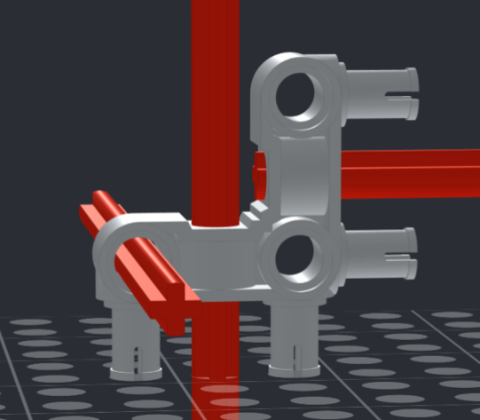

The LLAMA System Journey
Our story:
We, the Shenendehowa Robotic Renovators, created this site while participating in a school sponsored program called
FIRST Lego League (FLL), a Shenendehowa CSD middle school robotics club. This team has been working together since 2019. The original team members include: Aryan, Ethan, Hana, Jonah, Josiah, Larry, Max, Nitya, Pranamya, and Ryan. It's important to recognize the original team because they started what we now call TEA LLAMA (explained later in this message). Those active on the team in 2020-21 school year include: Jonah, Josiah, Larry, Max, Nitya, and Pranamya.
In FLL, teams participate in a challenge every
year that includes researching a topic. For the 2020-21 challenge, called Game Changers - RePLAY, we were charged with looking for ways to help people be more active. Becoming more active is really difficult to do during a pandemic. For more information on the FLL Game Changers - Replay challenge go to https://www.firstinspires.org/robotics/fll/challenge-and-season-info for more
information. So, why are you at a website called the LLAMA Sytem? It's our solution to this year's FLL Challenge. We looked for a solution that is safe, inexpensive, and, most importantly, FUN. We decided to focus on helping to make parks, trails, and nature preserves within our community more accessible to people. We define our communityas the towns within our school district (Shenendehowa CSD) which includes Ballston Lake, Clifton Park, Halfmoon, Jonesville, Malta, Mechanicville, Rexford, and Waterford (towns in upstate New York).
We call our website and solution the LLAMA System. LLAMA stands for Local Links that Augment and Motivate Activity.
Benefits and other interesting stuff about the LLAMA System:
- A one stop resource of important information and directions to the parks, trails, and nature preserves within our community.
- Identify existing connections (sidewalks or pathways) between the parks, trails, and nature preserves so that people can go from one to another if they want to explore or run/bike a greater distance that a particilar location/trail offers.
- TEA LLAMA (TEA stands for Trail Efficiency Algorithm) identifies the shortest distance
between connections. A minimum spanning tree algorithm was used to calculate the shortest distance between existing points. Using this tool, a visitor can plan outings to multiple locations that maps the safest route by foot or bike.For example, a cross country team can plan a long training run through existing trails and preserves. TEA LLAMA was created by our original 2019 but has been expaned up by the current tea and integrated into this year's solution.
- The LLAMA Challenge, a fun activity to provide motivation to visit our locations. We plan to have more challenges like this in the near future. To find out more about the LLAMA challenge go to www.llamasystem.org/challenge.html
- Our code is available on Github so others can customize it to their community and for feedback and to help with debugging.
- Fun fact, our solution name was inspired by a team member who thought a lego piece looked like a llama, though it was actually called the technic, pin connector perpendicular 3 x 3 bent with 4 pins. We also found the piece unique because it crosses three axes (x, y, z).

We will
If you have any questions about the FLL program, or have questions or want to provide feedback about this site then please email
llamasystem@gmail.com.
Back